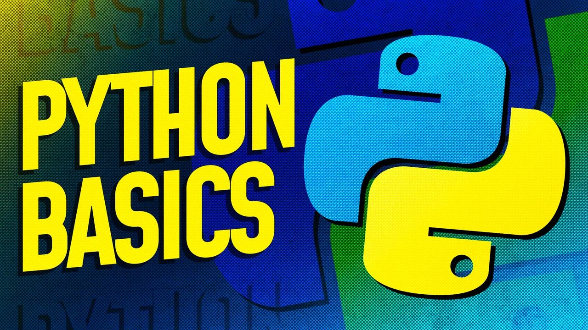
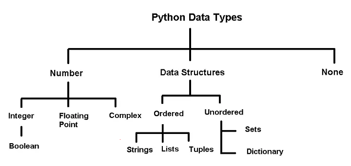

4 Python Basics
Before diving into new material, this chapter provides a quick refresher on key Python concepts covered in STAT201, which is the prerequisite for this course. If you have not taken STAT201, or if you feel you need to strengthen your Python skills, please review chapters 3–8 in the STAT201 book. A solid understanding of Python basics will help you succeed in this course and make it easier to follow the advanced topics ahead.
4.1 Python Variables
Variables are fundamental building blocks in Python—they allow you to store, update, and reference data throughout your code. Choosing clear and descriptive variable names makes your code easier to read, debug, and share with others.
4.1.1 Rules for variable names
- Variable names must start with a letter (a–z, A–Z) or an underscore (
_). They cannot begin with a number. - Names can include letters, digits, and underscores (
a_variable,profit_margin,the_3_musketeers). - Variable names are case-sensitive:
score,Score, andSCOREare all different variables. - Avoid using Python reserved words (like
for,if,class, etc.) as variable names.
Tip: Use descriptive names that reflect the purpose of the variable. This helps you and others understand your code at a glance.
Here are some examples of good variable names:
# Examples of valid variable names
a_variable = 23
is_today_Saturday = False
my_favorite_car = "Delorean"
the_3_musketeers = ["Athos", "Porthos", "Aramis"]If you use an invalid variable name, Python will raise a
SyntaxErrorand stop running your code. Always follow the naming rules to avoid these errors and keep your code readable.
4.1.2 Dynamic Typing in Python Variables
Python variables are dynamically typed, meaning you don’t need to declare their type before using them. You can assign a value of any type to a variable, and even change its type later in your code:
x = 5 # x is an integer
x = "cat" # now x is a stringTo check the type of a variable, use the built-in type() function:
type(x)This flexibility makes Python easy to use, but it’s important to keep track of your variable types to avoid confusion in your code.
# Print the variables defined above their values and their types
print("a_variable:", a_variable, "| type:", type(a_variable))
print("is_today_Saturday:", is_today_Saturday, "| type:", type(is_today_Saturday))
print("my_favorite_car:", my_favorite_car, "| type:", type(my_favorite_car))
print("the_3_musketeers:", the_3_musketeers, "| type:", type(the_3_musketeers))a_variable: 23 | type: <class 'int'>
is_today_Saturday: False | type: <class 'bool'>
my_favorite_car: Delorean | type: <class 'str'>
the_3_musketeers: ['Athos', 'Porthos', 'Aramis'] | type: <class 'list'>4.1.3 Multiple Variable Assignment in Python
Python allows you to assign values to several variables at once in a single line. This technique is especially useful for initializing related variables and can make your code cleaner and more efficient.
Example:
color1, color2, color3 = "red", "green", "blue"After this assignment: - color1 is “red” - color2 is “green” - color3 is “blue”
This approach works for any number of variables, as long as the number of values matches the number of variable names.
color1, color2, color3 = "red", "green", "blue"
print(color1)
print(color3)red
blueThe same value can be assigned to multiple variables by chaining multiple assignment operations within a single statement.
color4 = color5 = color6 = "magenta"
print(color4)
print(color6)magenta
magenta4.2 Built-in data types
Python has several built-in data types for storing different kinds of information in variables.

Primitive Types
In Python, integers, floats, booleans, and None are often called primitive data types because they represent a single value.
Container (Data Structure) Types
Types such as strings, lists, tuples, sets, and dictionaries are containers because they can hold multiple values (characters in a string, items in a list, key–value pairs in a dictionary, etc.). We’ll explore these container types in more detail in the next chapter.
Identifying Types
You can check the type of any object using Python’s built-in type() function. For example:
print(type(42)) # int
print(type(3.14)) # float
print(type(True)) # bool
print(type(None)) # NoneType
print(type("hello")) # str (a sequence / container of characters)
print(type([1, 2, 3])) # list<class 'int'>
<class 'float'>
<class 'bool'>
<class 'NoneType'>
<class 'str'>
<class 'list'>4.3 Python Standard Library
The Python Standard Library provides a wide range of modules and built-in functions that support everyday programming tasks. These tools allow you to write code that is both efficient and readable without reinventing common functionality.
Examples of built-in functions: - print(): Displays output to the screen. - len(): Returns the length of an object (like a list or string). - type(): Shows the type of a variable. - sum(): Adds up all items in an iterable (like a list). - range(): Generates a sequence of numbers, often used in loops.
You can explore more built-in functions and modules in the official documentation. Using these tools makes your code more readable and powerful.
Example:
range(): The range() function returns a sequence of evenly-spaced integer values. It is commonly used in for loops to define the sequence of elements over which the iterations are performed.
Below is an example where the range() function is used to create a sequence of whole numbers upto 10:
print(list(range(1,10)))[1, 2, 3, 4, 5, 6, 7, 8, 9]Date and Time:
Python includes a powerful built-in module called datetime for working with dates and times. This module lets you create, manipulate, and format date/time objects easily.
- You can get the current date and time.
- You can perform arithmetic with dates (e.g., add days, subtract dates).
- You can format dates and times for display or parsing.
This is essential for tasks like timestamping data, scheduling, or analyzing time series.
import datetime as dt#Defining a date-time object
dt_object = dt.datetime(2022, 9, 20, 11,30,0)Information about date and time can be accessed with the relevant attribute of the datetime object.
dt_object.day, dt_object.year(20, 2022)Formatting Dates and Times:
The strftime method in the datetime module lets you convert a datetime object into a readable string using custom formats. This is useful for displaying dates in a way that matches your needs (e.g., for reports, logs, or user interfaces).
Common format codes include: - %Y: 4-digit year (e.g., 2025) - %m: 2-digit month (01-12) - %d: 2-digit day (01-31) - %H: Hour (00-23) - %M: Minute (00-59) - %S: Second (00-59)
See the Python documentation for more formatting options.
dt_object.strftime('%m/%d/%Y')'09/20/2022'dt_object.strftime('%m/%d/%y %H:%M')'09/20/22 11:30'dt_object.strftime('%h-%d-%Y')'Sep-20-2022'4.4 Third-Party Packages (Libraries)
While Python has many useful built-in functions like print(), abs(), max(), and sum(), these are often not enough for data analysis. Third-party libraries extend Python’s capabilities and are essential for scientific computing and data science.
Popular libraries and their main uses:
- NumPy: Efficient numerical operations, arrays, and mathematical functions. Essential for scientific and data analysis tasks.
- Pandas: Powerful data manipulation and analysis. DataFrames and Series make reading, cleaning, and transforming data easy.
- Matplotlib & Seaborn: Data visualization. Matplotlib creates a wide range of plots; Seaborn builds on Matplotlib for attractive statistical graphics.
- SciPy: Advanced scientific computing—optimization, integration, statistics, and more.
- Scikit-learn: Machine learning—tools for preprocessing, classification, regression, clustering, and model evaluation.
- Statsmodels: Statistical modeling and inference (focuses on explanation, not just prediction).
How to use these libraries: 1. Install the libraries : Covered by Chapter 2 and 3 2. Import the libraries in your Python script or Jupyter notebook. 3. Use their functions and classes to analyze data, visualize results, and build models.
These libraries form the foundation of modern data science workflows in Python. You will gain plenty of hands-on experience with each of them throughout this course sequence.
4.4.1 Importing a Library
Use the import keyword to bring a library into your Python code.
Example:
import numpy as npAliases like np make code shorter and easier to read.
import numpy as np
np.arange(8)array([0, 1, 2, 3, 4, 5, 6, 7])Importing in Python: Key Styles
Import a whole module:
import mathImport specific items:
from random import randintUse an alias:
import pandas as pdRename an imported item:
from os.path import join as join_path
Pick the style that fits your needs and keeps your code readable.
4.5 User-defined functions
A function is a reusable set of instructions that takes one or more inputs, performs some operations, and often returns an output. Indeed, while python’s standard library and ecosystem libraries offer a wealth of pre-defined functions for a wide range of tasks, there are situations where defining your own functions is not just beneficial but necessary.

4.5.1 Creating and using functions
You can define a new function using the def keyword.
def say_hello():
print('Hello there!')
print('How are you?')Note the round brackets or parentheses () and colon : after the function’s name. Both are essential parts of the syntax. The function’s body contains an indented block of statements. The statements inside a function’s body are not executed when the function is defined. To execute the statements, we need to call or invoke the function.
say_hello()Hello there!
How are you?def say_hello_to(name):
print('Hello ', name)
print('How are you?')say_hello_to('Lizhen')Hello Lizhen
How are you?name = input ('Please enter your name: ')
say_hello_to(name)Please enter your name: George
Hello George
How are you?4.5.2 Variable scope: Local and global Variables
Local variable: When we declare variables inside a function, these variables will have a local scope (within the function). We cannot access them outside the function. These types of variables are called local variables. For example,
def greet():
message = 'Hello' # local variable
print('Local', message)
greet()Local Hello# print(message) # try to access message variable outside greet() function, uncomment this line to see the errorAs message was defined within the function greet(), it is local to the function, and cannot be called outside the function.
Global variable: Aa variable declared outside of the function or in global scope is known as a global variable. This means that a global variable can be accessed inside or outside of the function.
Let’s see an example of how a global variable is created.
message = 'Hello' # declare global variable
def greet():
print('Local', message) # declare local variable
greet()
print('Global', message)Local Hello
Global Hello4.5.3 Function Arguments
4.5.3.1 Named Arguments
When calling functions with multiple arguments, using named arguments improves clarity and reduces mistakes. You can also split long function calls across multiple lines for readability.
Example:
def greet(name, message):
print(f"{message}, {name}!")
greet(name="Alice", message="Hello")Named arguments make your code easier to understand and maintain.
Here is an example:
def loan_emi(amount, duration, rate, down_payment=0):
loan_amount = amount - down_payment
emi = loan_amount * rate * ((1+rate)**duration) / (((1+rate)**duration)-1)
return emiemi1 = loan_emi(
amount=1260000,
duration=8*12,
rate=0.1/12,
down_payment=3e5
)emi114567.197533892194.5.3.2 Optional Arguments
Functions with optional arguments offer more flexibility in how you can use them. You can call the function with or without the argument, and if there is no argument in the function call, then a default value is used.
emi2 = loan_emi(
amount=1260000,
duration=8*12,
rate=0.1/12)
emi219119.44676323354.5.3.3 *args and **kwargs
We can pass a variable number of arguments to a function using two special symbols in Python:
- *args for variable-length positional arguments
- **kwargs for variable-length keyword arguments
This is useful when you want your function to accept a variety of arguments.
def myFun(*args,**kwargs):
print("args: ", args)
print("kwargs: ", kwargs)
# Now we can use both *args ,**kwargs
# to pass arguments to this function :
myFun('John',22,'cs',name="John",age=22,major="cs")args: ('John', 22, 'cs')
kwargs: {'name': 'John', 'age': 22, 'major': 'cs'}4.6 Control Flow
Control flow statements (like if, for, and while) let you decide how your code runs based on conditions and loops. Control flow in Python includes both conditional statements and iteration loops to manage program logic.

4.6.1 Conditional Statements
As in other languages, python has built-in keywords that provide conditional flow of control in the code.
4.6.1.1 Branching with if, else and elif
One of the most powerful features of programming languages is branching: the ability to make decisions and execute a different set of statements based on whether one or more conditions are true.
The if statement
In Python, branching is implemented using the if statement, which is written as follows:
if condition:
statement1
statement2The condition can be a value, variable or expression. If the condition evaluates to True, then the statements within the if block are executed. Notice the four spaces before statement1, statement2, etc. The spaces inform Python that these statements are associated with the if statement above. This technique of structuring code by adding spaces is called indentation.
Indentation: Python relies heavily on indentation (white space before a statement) to define code structure. This makes Python code easy to read and understand. You can run into problems if you don’t use indentation properly. Indent your code by placing the cursor at the start of the line and pressing the
Tabkey once to add 4 spaces. PressingTabagain will indent the code further by 4 more spaces, and pressShift+Tabwill reduce the indentation by 4 spaces.
For example, let’s write some code to check and print a message if a given number is even.
a_number = 34if a_number % 2 == 0:
print("We're inside an if block")
print('The given number {} is even.'.format(a_number))We're inside an if block
The given number 34 is even.The else statement
We may want to print a different message if the number is not even in the above example. This can be done by adding the else statement. It is written as follows:
if condition:
statement1
statement2
else:
statement4
statement5
If condition evaluates to True, the statements in the if block are executed. If it evaluates to False, the statements in the else block are executed.
if a_number % 2 == 0:
print('The given number {} is even.'.format(a_number))
else:
print('The given number {} is odd.'.format(a_number))The given number 34 is even.The elif statement
Python also provides an elif statement (short for “else if”) to chain a series of conditional blocks. The conditions are evaluated one by one. For the first condition that evaluates to True, the block of statements below it is executed. The remaining conditions and statements are not evaluated. So, in an if, elif, elif… chain, at most one block of statements is executed, the one corresponding to the first condition that evaluates to True.
today = 'Wednesday'if today == 'Sunday':
print("Today is the day of the sun.")
elif today == 'Monday':
print("Today is the day of the moon.")
elif today == 'Tuesday':
print("Today is the day of Tyr, the god of war.")
elif today == 'Wednesday':
print("Today is the day of Odin, the supreme diety.")
elif today == 'Thursday':
print("Today is the day of Thor, the god of thunder.")
elif today == 'Friday':
print("Today is the day of Frigga, the goddess of beauty.")
elif today == 'Saturday':
print("Today is the day of Saturn, the god of fun and feasting.")Today is the day of Odin, the supreme diety.In the above example, the first 3 conditions evaluate to False, so none of the first 3 messages are printed. The fourth condition evaluates to True, so the corresponding message is printed. The remaining conditions are skipped. Try changing the value of today above and re-executing the cells to print all the different messages.
Using if, elif, and else together
You can also include an else statement at the end of a chain of if, elif… statements. This code within the else block is evaluated when none of the conditions hold true.
a_number = 49if a_number % 2 == 0:
print('{} is divisible by 2'.format(a_number))
elif a_number % 3 == 0:
print('{} is divisible by 3'.format(a_number))
elif a_number % 5 == 0:
print('{} is divisible by 5'.format(a_number))
else:
print('All checks failed!')
print('{} is not divisible by 2, 3 or 5'.format(a_number))All checks failed!
49 is not divisible by 2, 3 or 5Non-Boolean Conditions
Note that conditions do not necessarily have to be booleans. In fact, a condition can be any value. The value is converted into a boolean automatically using the bool operator. Any value in Python can be converted to a Boolean using the bool function.
Only the following values evaluate to False (they are often called falsy values):
- The value
Falseitself - The integer
0 - The float
0.0 - The empty value
None - The empty text
"" - The empty list
[] - The empty tuple
() - The empty dictionary
{} - The empty set
set() - The empty range
range(0)
Everything else evaluates to True (a value that evaluates to True is often called a truthy value).
if '':
print('The condition evaluted to True')
else:
print('The condition evaluted to False')The condition evaluted to Falseif 'Hello':
print('The condition evaluted to True')
else:
print('The condition evaluted to False')The condition evaluted to Trueif { 'a': 34 }:
print('The condition evaluted to True')
else:
print('The condition evaluted to False')The condition evaluted to Trueif None:
print('The condition evaluted to True')
else:
print('The condition evaluted to False')The condition evaluted to FalseNested conditional statements
The code inside an if block can also include an if statement inside it. This pattern is called nesting and is used to check for another condition after a particular condition holds true.
a_number = 15if a_number % 2 == 0:
print("{} is even".format(a_number))
if a_number % 3 == 0:
print("{} is also divisible by 3".format(a_number))
else:
print("{} is not divisibule by 3".format(a_number))
else:
print("{} is odd".format(a_number))
if a_number % 5 == 0:
print("{} is also divisible by 5".format(a_number))
else:
print("{} is not divisibule by 5".format(a_number))15 is odd
15 is also divisible by 5Notice how the print statements are indented by 8 spaces to indicate that they are part of the inner if/else blocks.
Nested
if,elsestatements are often confusing to read and prone to human error. It’s good to avoid nesting whenever possible, or limit the nesting to 1 or 2 levels.
Shorthand if conditional expression
A frequent use case of the if statement involves testing a condition and setting a variable’s value based on the condition.
Python provides a shorter syntax, which allows writing such conditions in a single line of code. It is known as a conditional expression, sometimes also referred to as a ternary operator. It has the following syntax:
x = true_value if condition else false_valueIt has the same behavior as the following if-else block:
if condition:
x = true_value
else:
x = false_valueLet’s try it out for the example above.
parity = 'even' if a_number % 2 == 0 else 'odd'print('The number {} is {}.'.format(a_number, parity))The number 15 is odd.The pass statement
if statements cannot be empty, there must be at least one statement in every if and elif block. We can use the pass statement to do nothing and avoid getting an error.
a_number = 9# please uncomment the code below and see the error message
# if a_number % 2 == 0:
# elif a_number % 3 == 0:
# print('{} is divisible by 3 but not divisible by 2')As there must be at least one statement withihng the if block, the above code throws an error.
if a_number % 2 == 0:
pass
elif a_number % 3 == 0:
print('{} is divisible by 3 but not divisible by 2'.format(a_number))9 is divisible by 3 but not divisible by 24.6.2 Loops
4.6.2.1 while loops
Another powerful feature of programming languages, closely related to branching, is running one or more statements multiple times. This feature is often referred to as iteration on looping, and there are two ways to do this in Python: using while loops and for loops.
while loops have the following syntax:
while condition:
statement(s)Statements in the code block under while are executed repeatedly as long as the condition evaluates to True. Generally, one of the statements under while makes some change to a variable that causes the condition to evaluate to False after a certain number of iterations.
Let’s try to calculate the factorial of 100 using a while loop. The factorial of a number n is the product (multiplication) of all the numbers from 1 to n, i.e., 1*2*3*...*(n-2)*(n-1)*n.
result = 1
i = 1
while i <= 10:
result = result * i
i = i+1
print('The factorial of 100 is: {}'.format(result))The factorial of 100 is: 36288004.6.2.2 Infinite Loops
Suppose the condition in a while loop always holds true. In that case, Python repeatedly executes the code within the loop forever, and the execution of the code never completes. This situation is called an infinite loop. It generally indicates that you’ve made a mistake in your code. For example, you may have provided the wrong condition or forgotten to update a variable within the loop, eventually falsifying the condition.
If your code is stuck in an infinite loop during execution, just press the “Stop” button on the toolbar (next to “Run”) or select “Kernel > Interrupt” from the menu bar. This will interrupt the execution of the code. The following two cells both lead to infinite loops and need to be interrupted.
# INFINITE LOOP - INTERRUPT THIS CELL
result = 1
i = 1
while i <= 100:
result = result * i
# forgot to increment i# INFINITE LOOP - INTERRUPT THIS CELL
result = 1
i = 1
while i > 0 : # wrong condition
result *= i
i += 14.6.2.3 break and continue statements
In Python, break and continue statements can alter the flow of a normal loop.

We can use the break statement within the loop’s body to immediately stop the execution and break out of the loop. with the continue statement. If the condition evaluates to True, then the loop will move to the next iteration.
i = 1
result = 1
while i <= 100:
result *= i
if i == 42:
print('Magic number 42 reached! Stopping execution..')
break
i += 1
print('i:', i)
print('result:', result)Magic number 42 reached! Stopping execution..
i: 42
result: 1405006117752879898543142606244511569936384000000000i = 1
result = 1
while i < 8:
i += 1
if i % 2 == 0:
print('Skipping {}'.format(i))
continue
print('Multiplying with {}'.format(i))
result = result * i
print('i:', i)
print('result:', result)Skipping 2
Multiplying with 3
Skipping 4
Multiplying with 5
Skipping 6
Multiplying with 7
Skipping 8
i: 8
result: 105In the example above, the statement result = result * i inside the loop is skipped when i is even, as indicated by the messages printed during execution.
Logging: The process of adding
Task: Guess the output and explain it.
# Use of break statement inside the loop
for val in "string":
if val == "i":
break
print(val)
print("The end")s
t
r
The end# Program to show the use of continue statement inside loops
for val in "string":
if val == "i":
continue
print(val)
print("The end")s
t
r
n
g
The end4.6.2.4 for loops
A for loop is used for iterating or looping over sequences, i.e., lists, tuples, dictionaries, strings, and ranges. For loops have the following syntax:
for value in sequence:
statement(s)The statements within the loop are executed once for each element in sequence. Here’s an example that prints all the element of a list.
days = ['Monday', 'Tuesday', 'Wednesday', 'Thursday', 'Friday']
for day in days:
print(day)Monday
Tuesday
Wednesday
Thursday
Friday# Looping over a string
for char in 'Monday':
print(char)M
o
n
d
a
y# Looping over a dictionary
person = {
'name': 'John Doe',
'sex': 'Male',
'age': 32,
'married': True
}
for key, value in person.items():
print("Key:", key, ",", "Value:", value)Key: name , Value: John Doe
Key: sex , Value: Male
Key: age , Value: 32
Key: married , Value: True4.6.2.5 Iterating using range
The range function is used to create a sequence of numbers that can be iterated over using a for loop. It can be used in 3 ways:
range(n)- Creates a sequence of numbers from0ton-1range(a, b)- Creates a sequence of numbers fromatob-1range(a, b, step)- Creates a sequence of numbers fromatob-1with increments ofstep
Let’s try it out.
for i in range(4):
print(i)0
1
2
3for i in range(3, 8):
print(i)3
4
5
6
7for i in range(3, 14, 4):
print(i)3
7
11Ranges are used for iterating over lists when you need to track the index of elements while iterating.
a_list = ['Monday', 'Tuesday', 'Wednesday', 'Thursday', 'Friday']
for i in range(len(a_list)):
print('The value at position {} is {}.'.format(i, a_list[i]))The value at position 0 is Monday.
The value at position 1 is Tuesday.
The value at position 2 is Wednesday.
The value at position 3 is Thursday.
The value at position 4 is Friday.4.7 Object Oriented Programming
Python is an object-oriented programming language. In layman terms, it means that every number, string, data structure, function, class, module, etc., exists in the python interpreter as a python object. An object may have attributes and methods associated with it. For example, let us define a variable that stores an integer:
var = 2The variable var is an object that has attributes and methods associated with it. For example a couple of its attributes are real and imag, which store the real and imaginary parts respectively, of the object var:
print("Real part of 'var': ",var.real)
print("Real part of 'var': ",var.imag)Real part of 'var': 2
Real part of 'var': 0Attribute: An attribute is a value associated with an object, defined within the class of the object.
Method: A method is a function associated with an object, defined within the class of the object, and has access to the attributes associated with the object.
For looking at attributes and methods associated with an object, say obj, press tab key after typing obj..
Consider the example below of a class example_class:
class example_class:
class_name = 'My Class'
def my_method(self):
print('Hello World!')
e = example_class()In the above class, class_name is an attribute, while my_method is a method.
4.7.0.1 Call by Reference in Python
Python uses call by object reference (also called call by sharing). When you assign an object to a variable, the variable points to the object in memory—not a copy.
Changes made through one reference affect the original object. This is important to remember when working with mutable types like lists and dictionaries.
x = [5,3]The variable name x is a reference to the memory location where the object [5, 3] is stored. Now, suppose we assign x to a new variable y:
y = xIn the above statement the variable name y now refers to the same object [5,3]. The object [5,3] does not get copied to a new memory location referred by y. To prove this, let us add an element to y:
y.append(4)
print(y)[5, 3, 4]print(x)[5, 3, 4]When we changed y, note that x also changed to the same object, showing that x and y refer to the same object, instead of referring to different copies of the same object.